Calidad del Agua - Region de Valparaiso
Analisis de parametros fisicoquimicos de tres estaciones: Rio Blanco, Rio Blanco (Los Leones) y Rio Aconcagua.
Analisis desde 14/08/2024 hasta el 14/08//2025.
Rio Blanco (05402001-5)
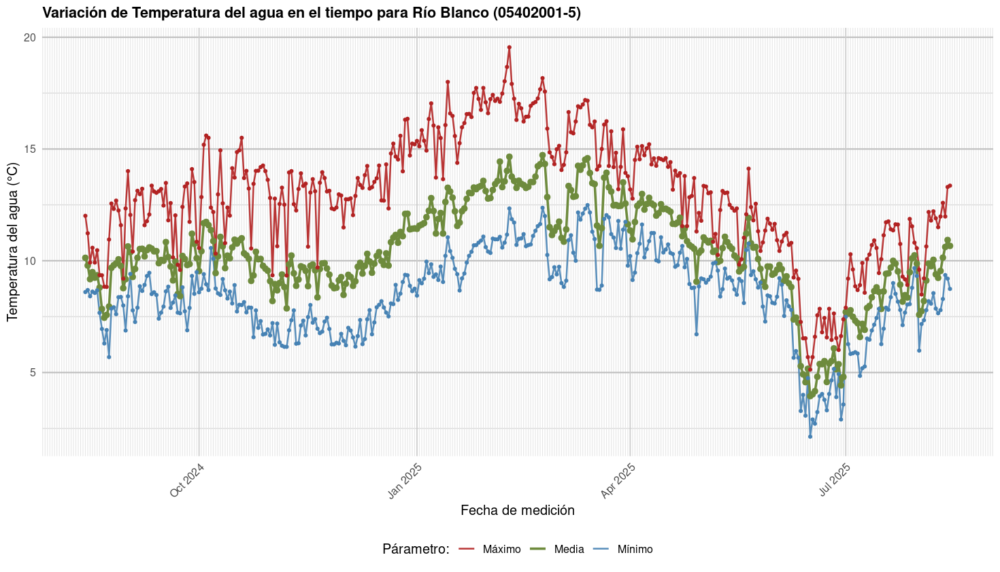
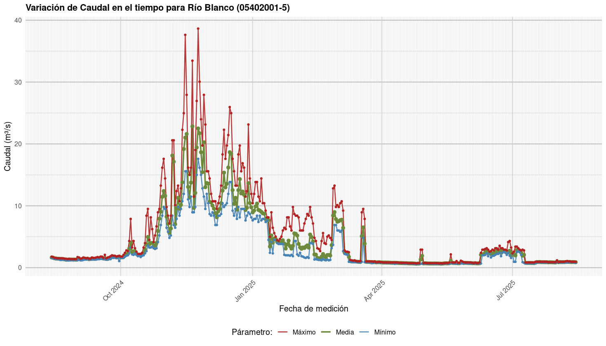
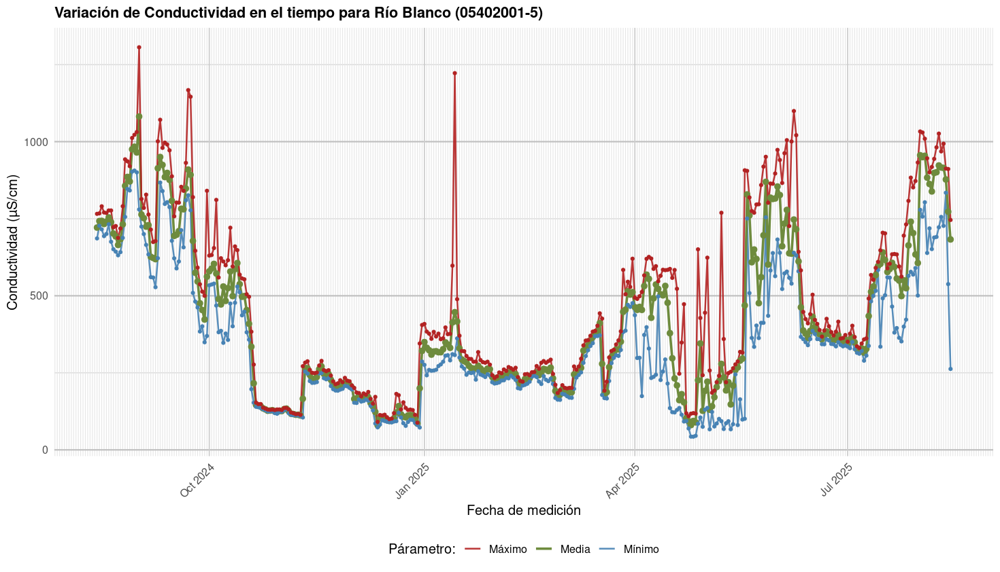
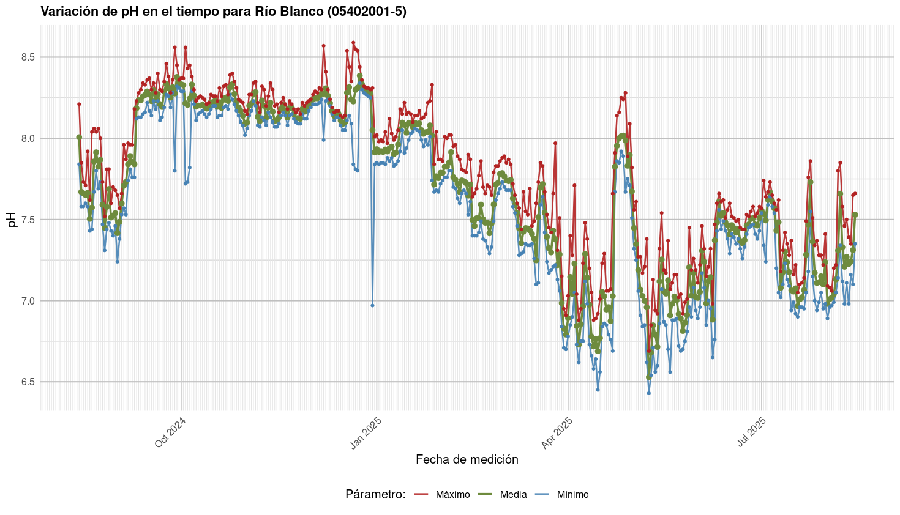
Rio Blanco - Los Leones (05402015-5)
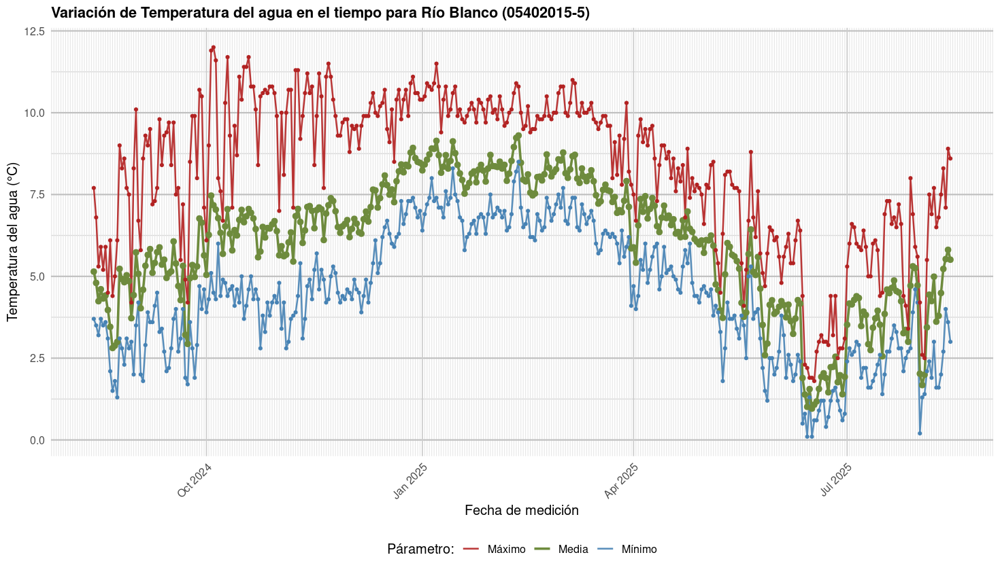
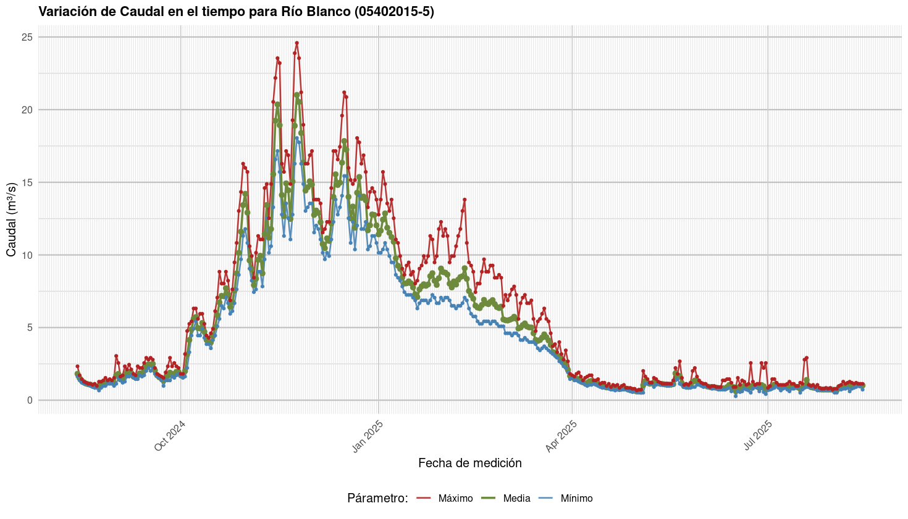
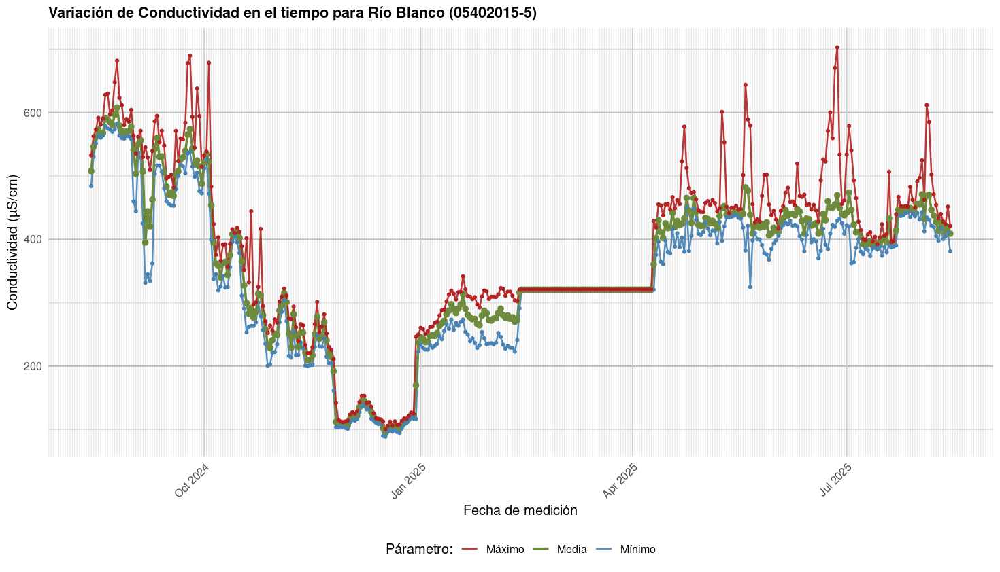
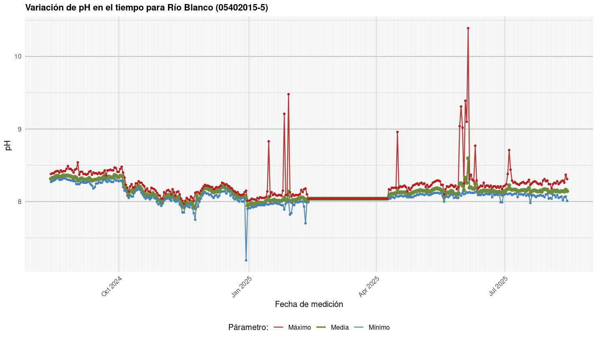
Rio Aconcagua - Chacabuquito (05410002-7)
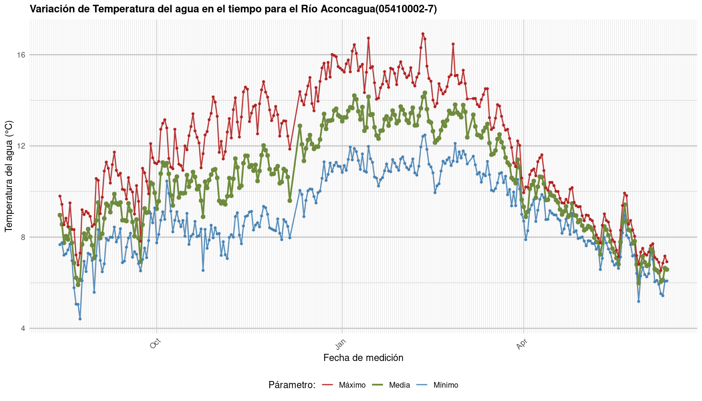
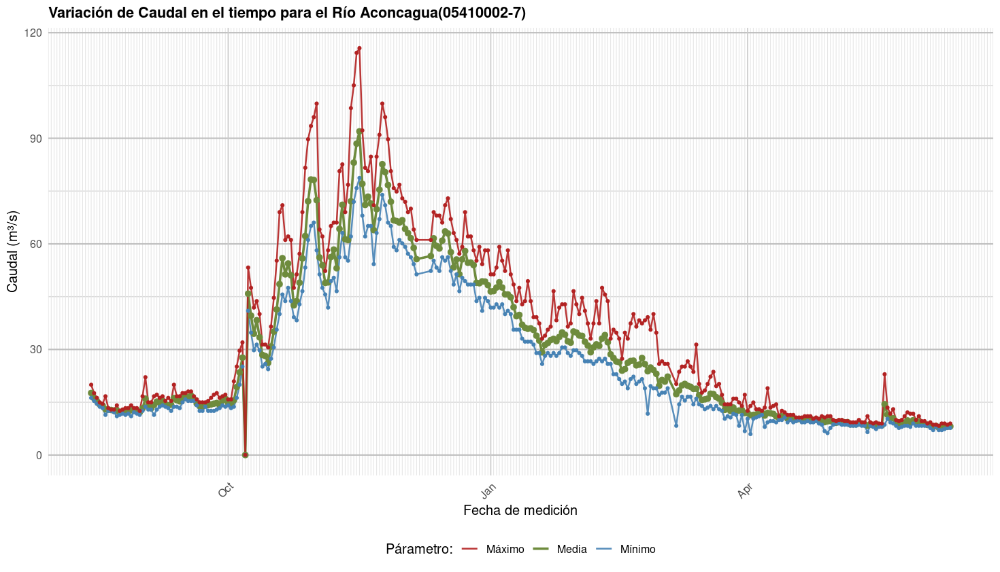
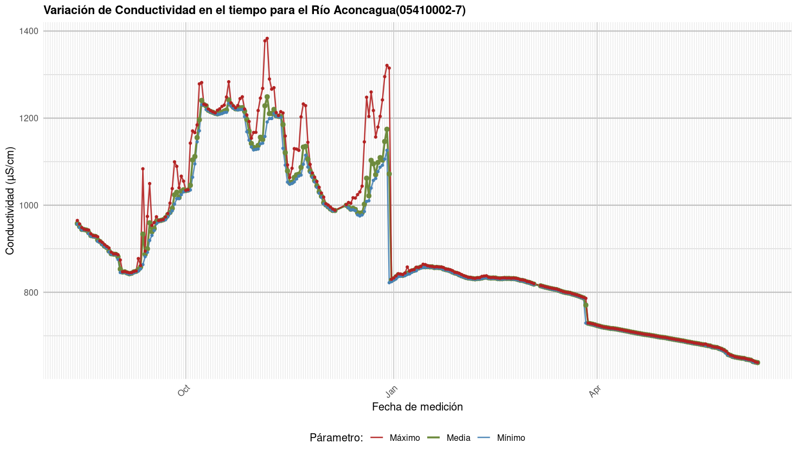
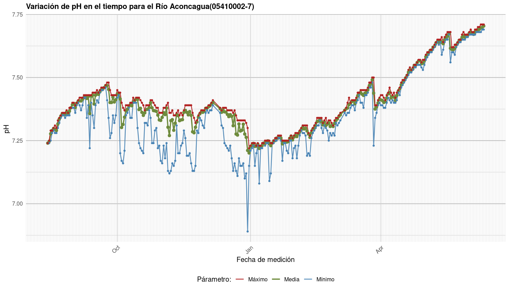